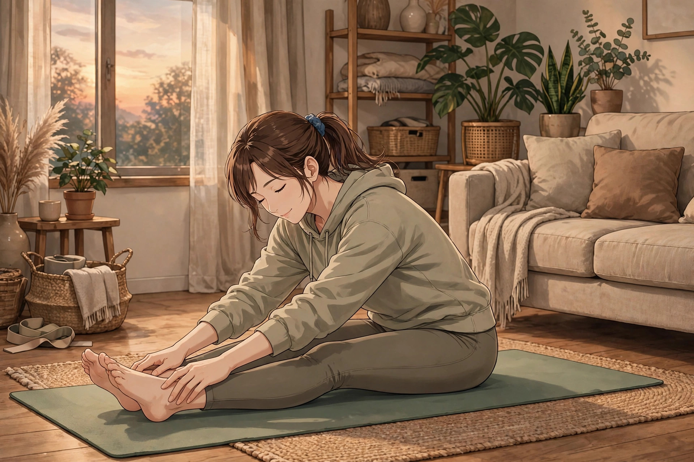

がんばりすぎないことが、体を整える近道になる理由を解説します
セルフケアは、特別な運動ではありません。日常で足りなくなった動きと、たまりすぎた緊張を、少しずつ戻していく作業です。続けるための設計こそが、結果を分けます。
「ストレッチが良いのは分かるけれど、続かない」「道具を買ったのに、最初の1週間で終わった」。セルフケアの悩みの多くは、やり方ではなく「続け方」にあります。このページでは、セルフケアの基本的な考え方と、無理なく続けるための具体的なコツを解説します。
現代の生活は、同じ姿勢が長く続きます。座る、画面を見る、手元で作業する。この偏った使い方の中で、伸ばされることのない筋肉は縮んだままになり、使われない筋肉は働きを忘れていきます。セルフケアの役割は、この偏りを日常の中で少しずつ戻すことです。
大切なのは、ケアを「鍛える」ことと混同しないことです。姿勢やこりのケアで必要なのは、強い負荷ではなく、動かしていなかった範囲を動かし、張り続けた筋肉をゆるめること。短時間でも、方向が合っていれば体は応えてくれます。まずは「今日の体で、いちばん足りていない動きは何か」を考えることが、ケア選びの出発点です。
足りない動きは人によって違います。座る時間の長い方は伸ばす動きが、立ち仕事の方はゆるめる動きと巡らせる動きが足りなくなりがちです。自分の生活のパターンを知ることが、対象選びの近道になります。
セルフケアが続かない背景には、共通したパターンがあります。最初から10種目を設定する、毎日30分と決める、痛いほど伸ばす、できない日に自分を責める。意欲が高いほど設定が高くなり、生活との摩擦で途切れてしまいます。続かなかった経験を「意志が弱いから」と結論づける方は多いのですが、実際は設定の側に無理があった場合がほとんどです。
体づくりは、強さよりも「繰り返した回数」で決まります。1回30分を月に2回より、1回3分を毎日の方が、筋肉の使い方の記録としては濃くなります。続ける設計は、根性の問題ではなく、仕組みの問題として考えることが大切です。
もう一つの背景は、ケアの「正解探し」です。情報が多いほど方法を次々に替えたくなりますが、体が応えるには同じ刺激の繰り返しが必要です。方法を替えるかどうかは、続けた先で判断すること。まずは一つの方法を、続く形で試す期間が大切です。
「夜にやる」より「お風呂上がりに」「歯みがきの後に」など、すでにある習慣の直後に結びつけると、忘れにくくなります。新しい時間枠を作るのではなく、今の生活の流れに小さなケアを差し込む発想です。場所も同じで、マットを出しっぱなしにできる場所、道具が手の届く場所にあることが、始めるまでの摩擦を減らします。
曜日で対象を決める方法も有効です。月曜は首と肩、水曜は脚、金曜は背中、というように割り振ると、「今日は何をしよう」と考える負担が減り、体全体をまんべんなく回せます。考える手間を減らすことは、続けるための立派な工夫です。
1回のケアは、1か所・1〜3分で十分です。今日は首、明日はふくらはぎ、というように対象を絞ると、心理的な負担が下がります（図1）。「やらなかった日」を作らないことよりも、「ゼロにしない日」を増やすことが、習慣化の鍵になります。体調の悪い日は、ゆっくり息を吐く時間だけでも構いません。

図1：自宅でヨガマットの上でストレッチする場面。短時間でも、日常の中に組み込むことが続けやすさにつながります。
小さくする工夫は、強さにも当てはまります。「気持ちよく伸びている」範囲で止めることが、翌日も続けたくなる感覚につながります。痛みをこらえて伸ばした日は、体だけでなく気持ちの面でも、次への抵抗が大きくなります。
ケアの前後で、体の感覚を比べる習慣を持つと、続ける意味が見えてきます。首を回したときの動きの範囲、脚を上げたときの軽さ、寝る前の体の温かさ。小さな変化に気づけるようになると、ケアは「やらされるもの」から「体の状態を知る時間」に変わります。数値や見た目の変化だけを追うと、短い期間では見えにくく、続きにくくなります。
変化を感じる視点は、人によって違います。動きの範囲、軽さ、温かさ、眠りの深さ。自分が感じ取りやすい物差しを一つ持っておくと、ケアの手応えを確認しやすくなります。当サロンでも、施術の前後で同じ動きをしていただき、変化を一緒に確認しています。
感覚の変化は、その日の体の状態を教えてくれる情報でもあります。「今日は右肩の張りが強い」「脚のむくみが昨日より軽い」。こうした観察がたまると、自分の負担のパターンが見えてきて、ケアの対象選びも的確になります。
道具は、続けるための補助です。フォームローラーやストレッチ用のボールなどは、自分の手が届きにくい場所をケアする助けになります。ただし、道具の数と継続率は比例しません。まず一つを使い倒すことがおすすめです。使い方に迷う道具が増えるほど、始める前の考える手間が増えてしまいます。
やり方に迷ったときは、部位別・目的別にまとめられた資料を引くのが近道です。当サロンが連携するセルフケア資料ライブラリでは、体の部位や悩みごとにセルフケアの方法をまとめています。施術後に「今日の体に合うもの」をお伝えする際にも、この資料の中から選んでいます。
資料や動画を使うときは、一度に全部を真似るのではなく、今の自分に合う一つを選ぶことが大切です。情報が多い時代だからこそ、「選ぶ基準」を持つことが、続ける力になります。迷ったときは、施術の場で相談していただければ、その時期の体に合うものを一緒に選びます。
軽い張りや、その日の疲れの範囲であれば、セルフケアで十分に戻せることが多いです。一方で、張りが何週間も続く、左右差が大きい、自分では届かない深い場所が気になる、といった場合は、施術で一度リセットする方が早いことがあります。施術は「自分で戻せる範囲」を広げるためのものでもあり、施術とセルフケアは対立するものではなく、組み合わせるものです。
なお、しびれを伴う、動かすと鋭い痛みがある、熱を持って腫れているといった場合は、セルフケアの対象ではありません。無理に動かさず、医療機関での確認をおすすめします。
当サロンでは、施術の内容をそのまま自宅で再現するのではなく、その方の生活に差し込める形に絞ってお伝えしています。対象は1〜2か所、時間は数分、結びつける場面まで一緒に決めます。次回の来店時に「できたかどうか」ではなく「体の感覚がどう変わったか」をうかがい、次のケアを調整します。がんばらせるのではなく、続く形を一緒に作ることが、セルフケア支援の考え方です。
セルフケアは、特別な日に行うものではなく、日常の延長にあります。小さく、無理なく、体の感覚を確かめながら。この3つがそろう形を、一緒に見つけていくことが当サロンの役割です。
「どこから手をつければいいか分からない」という声も多くあります。目安は、その日の体でいちばん気になる場所から始めることです。張りが強い場所は、体が負担を知らせている場所でもあります。ただし、張っている場所そのものではなく、その周辺や反対側の動きが背景にあることも多いため、気になる場所の「隣の関節」まで含めて動かすと、変化を感じやすくなります。肩が気になる日は首と肩甲骨、腰が気になる日は股関節とお尻、という具合です。
冷えが気になる日は、ほぐすより温めることを先に。むくみが気になる日は、強い圧より、足首やふくらはぎを動かすことを先に。体の状態に合わせてケアの種類を選ぶ視点が持てると、セルフケアは「決まったメニュー」から「その日に合う手当て」に変わります。
朝のケアは、体を目覚めさせることが目的です。寝ている間に固まった関節を小さく動かし、背伸びや首回しで巡りを起こします。夜のケアは、1日の負担をリセットすることが目的で、温めることとゆるめることが中心になります。入浴後の体が温まった時間帯は、筋肉がゆるみやすく、短いケアでも変化を感じやすい時間です。
仕事の合間のケアは、姿勢のリセットが目的です。座りっぱなしの合間に立ち上がり、肩甲骨を寄せる、ふくらはぎを伸ばすといった1分以内の動きでも、負担の積み重なり方は変わります。時間帯ごとに目的を分けると、ケアの選び方がシンプルになります。
体調や予定によっては、ケアをする余裕がない日もあります。そういう日のために、「最低ライン」をあらかじめ決めておくことが有効です。たとえば「湯船につかるだけ」「寝る前に脚を上げるだけ」という、その日できる最小の形です。最低ラインを用意しておくと、できない日が「失敗」にならず、習慣の糸が切れません。
また、ケアの時間は家族の予定や仕事の波に合わせて、時期ごとに組み替えて構いません。生活が変われば、差し込める場面も変わります。形を変えながらでも続いていること自体が、体にとっての記録になります。
続けるための道具として、手帳やスマートフォンへの小さな記録も有効です。記録するのは、実施したかどうかと、その日の体の感覚を一言だけ。「首が軽い」「脚が重い」といった一言が続けば、自分の負担のパターンが見えてきます。記録は評価のためではなく、観察のためのものです。書けない日があっても、そこでやめずに再開することが、長く続けるコツの一つです。
Q. セルフケアは毎日しないと意味がありませんか？
A. 毎日である必要はありません。大切なのは、間隔を空けすぎずに繰り返すことです。週に数回でも続いている状態の方が、体には記録として残ります。
Q. 痛いほど伸ばした方が効きますか？
A. 痛みを感じるほどの強さは、筋肉が防御で緊張し、逆効果になることがあります。「気持ちよく伸びている」範囲が目安です。
Q. 道具は必要ですか？
A. 手だけでもできるケアは多くあります。道具は届きにくい場所を助ける補助として、必要を感じたものから一つずつで十分です。
Q. どのくらいで変化が分かりますか？
A. 期間の断言はできませんが、ケアの前後の感覚の違いは、その場でも感じられることが多いです。姿勢やラインの変化は、繰り返しの中で少しずつ表れます。
解説と施術は、施術歴30年・鍼灸師の資格を持つ平賀建人が担当します。登録販売者・アロマセラピスト・パーソナルトレーナーの知識も活かし、体の仕組みをできるだけ分かりやすくお伝えすることを心がけています。
この記事は専門解説シリーズの1本です。料金やご予約についてはトップページをご覧ください。